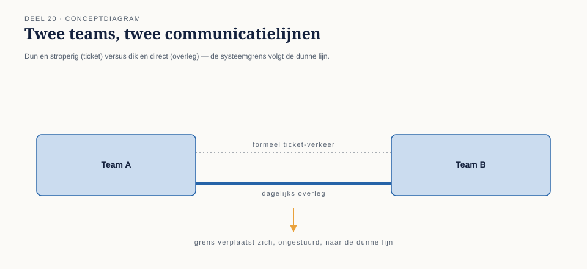
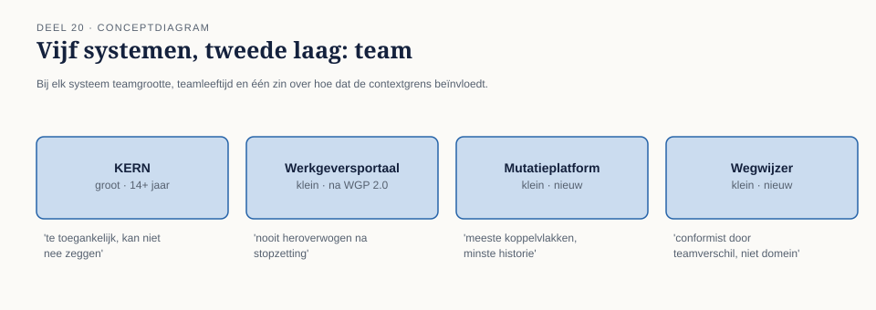
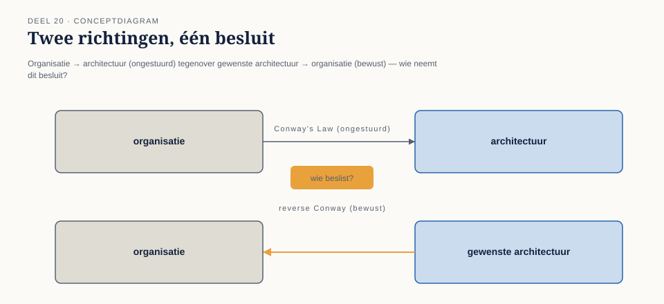
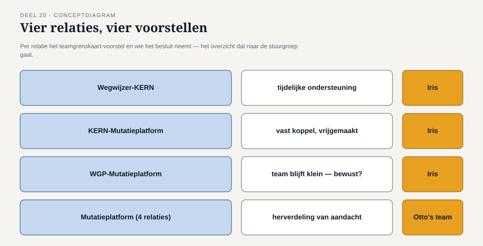

Deel 20 — Bounded contexts en teams: Conway’s Law en teamtopologieën
Slidedeck · Ductus-cursus Domain-Driven Design · niveau 2 · deel 20 van 30 · zelfstandig leesbaar · 38 slides
Slide 1 — Titel
Domain-Driven Design — deel 20 Bounded contexts en teams: Conway’s Law en teamtopologieën Niveau 2: professional · Programma Mutatieplatform · zelfstandig leesbaar
Slide 2 — Voor wie dit deel los volgt
Meridiaan Pensioen — vijf systemen, nooit gezamenlijk in kaart gebracht. Een team heeft een context map opgeleverd: acht relaties, acht patronen. Dit deel stelt de volgende vraag: kloppen die grenzen met de mensen die ze bouwen?
Slide 3 — Wat een bounded context nog meer is
Niet alleen een model. Ook een team — met een eigen realiteit.
Slide 4 — Iris’ vraag
“Kiezen jullie deze architecturen om het domein, of om hoe mijn teams nu toevallig zijn ingericht?”
Slide 5 — Twee weken later
Iris opent de sessie zelf. “Ik denk dat ik het antwoord niet leuk vind.”
Slide 6 — Iris
“Ik heb de teams ingedeeld op basis van wie er vrij was. Niet op basis van een context map die er toen nog niet was.”
Slide 7 — Daan
“Kunnen de teams zoals ze nu zijn, die kaart eigenlijk wel volgen — of gaat de organisatie iets anders bouwen dan wat op de kaart staat?”
Slide 8 — Wat dit deel oplevert
- Conway’s Law
- Vier teamvormen, drie samenwerkingsmanieren
- De reverse Conway-manoeuvre
- De teamgrenskaart — vier relaties getoetst
Slide 9 — Conway’s Law
Melvin Conway, 1968. Een organisatie bouwt een systeem dat haar eigen communicatiestructuur weerspiegelt.
Slide 10 — Het mechanisme
Afstemming die makkelijk is → naadloze koppeling. Afstemming die moeizaam is → een grens. Ongeacht wat het domein zou willen.
Slide 11 —

Twee teams, twee communicatielijnen — dun en stroperig / dik en direct — de systeemgrens verplaatst zich, ongestuurd, naar de dunne lijn
Slide 12 — Vera, over KERN
“Elk team dat geen zin had om een ander team erbij te betrekken, heeft het gewoon aan KERN toegevoegd.”
Slide 13 — Wat de wet niet zegt
Geen voorschrift. Een beschrijving. Precies daarom: zowel waarschuwing als instrument.
Slide 14 — Het landschap tegen het licht
Vier systemen, vier teams, vier Conway-verklaringen.
Slide 15 — Vera en KERN
Groot, veertien jaar samen, meest toegankelijk. Nooit geleerd nee te zeggen.
Slide 16 — Karsten en het Werkgeversportaal
“Mijn architectuur volgt mijn teamgrootte, niet andersom.”
Slide 17 — Otto en het Mutatieplatform
“Wij zijn het team met de meeste koppelvlakken en de minste geschiedenis.”
Slide 18 — Priya en Wegwijzer
“We zijn conformist geworden omdat wij het kleinste, nieuwste team zijn — niet omdat dat de beste keuze was.”
Slide 19 —

Vijf systemen, met teamgrootte, teamleeftijd en het effect op elke contextgrens
Slide 20 — Teamtopologieën
Een manier om er doelbewust mee om te gaan. Vier teamvormen. Drie samenwerkingsmanieren.
Slide 21 — Vier teamvormen
- Levert zelf, van begin tot eind — Nabestaandenloket
- Biedt een voorziening waar anderen op leunen
- Versterkt tijdelijk een ander team — Foppe
- Bewaakt iets specialistisch — actuariële rekenregels
Slide 22 — Otto, in eigen woorden
“Een team dat zelf iets aflevert. Een team dat een voorziening biedt. Een team dat een ander beter maakt. Een team dat iets bewaakt dat niemand anders hoeft te snappen.”
Slide 23 — Drie samenwerkingsmanieren
- Intensief en tijdelijk — samen uitvinden
- Als dienst — vertrouwen zonder ingrijpen
- Tijdelijk ondersteunend — tot het overbodig is
Slide 24 — Vera, de parallel
“Bijna hetzelfde onderscheid als in deel 13 en 14 — alleen dan over teams in plaats van modellen.”
Slide 25 — Foppe, de waarschuwing
“Een contextgrens en een teamgrens vertellen alleen hetzelfde verhaal als iemand ze bewust naast elkaar legt.”
Slide 26 —

Vier teamvormen met een systeem als voorbeeld, drie samenwerkingslijnen tussen teamparen
Slide 27 — De reverse Conway-manoeuvre
De logica omgekeerd: organisatie eerst inrichten, architectuur volgt.
Slide 28 — Iris, de consequentie
“De reverse Conway-manoeuvre is geen gratis inzicht. Het is een reorganisatiebesluit met een architectuurmotief.”
Slide 29 — Daan, de grens
“Wat we niet kunnen — en niet zouden moeten willen — is die structuur zelf opleggen.”
Slide 30 —

Organisatie → architectuur (ongestuurd) Gewenste architectuur → organisatie (bewust) Wie neemt dit besluit?
Slide 31 — De werkvorm van dit deel
De teamgrenskaart
Vier stappen. Eén vraag die het verschil maakt.
Slide 32 — De vier stappen
- Contextgrens en patroon
- De teams in Conway-termen
- Teamvorm en samenwerking tegen het patroon getoetst
- Reverse Conway-voorstel, met de beslisser benoemd
Slide 33 — Het veld dat het verschil maakt
Als niemand deze mismatch benoemt —
welke grens verschuift er dan vanzelf,
en naar wat?
Slide 34 — Toepassing: vier relaties, vier voorstellen
Wegwijzer-KERN. KERN-Mutatieplatform. Werkgeversportaal-Mutatieplatform. Het Mutatieplatform zelf.
Slide 35 — Priya, over Wegwijzer-KERN
“Als het na die ondersteuning nog steeds conformist is, is dat een besluit. Nu is het een gewoonte.”
Slide 36 —

Vier relaties, vier voorstellen, vier beslissers — het overzicht dat naar de stuurgroep gaat
Slide 37 — Iris, aan het eind
“Jullie vragen mij om te erkennen dat een deel van hoe ik dit programma heb ingericht, jullie eigen werk tegenwerkt.”
Slide 38 — Terug naar de casus, en vooruit
Geen nieuwe context map. Wel een tweede laag eronder. Deel 21 — domain events: hoe systemen elkaar bereiken zonder elkaar voortdurend nodig te hebben.